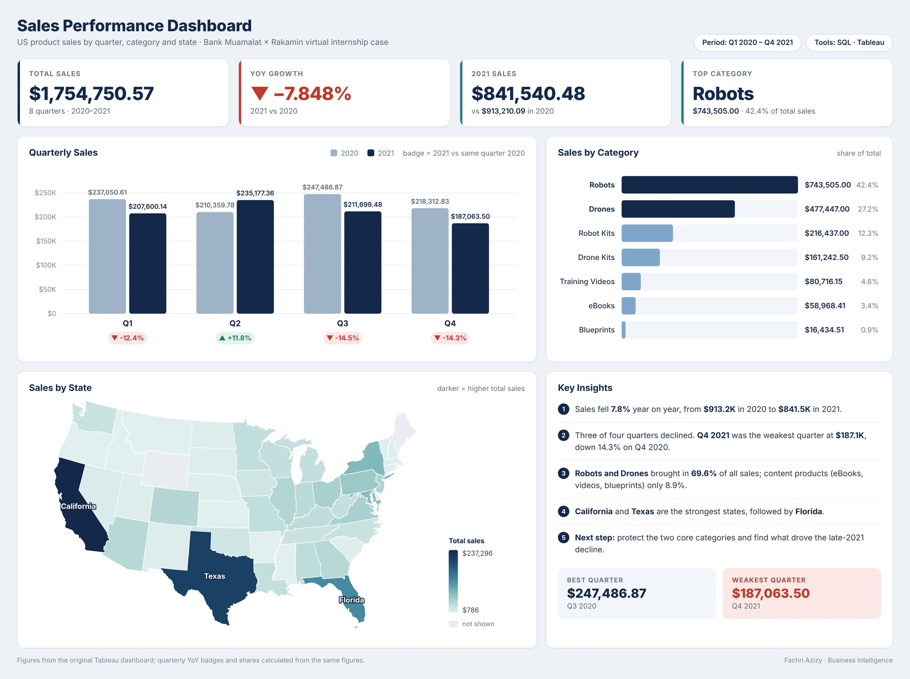

Click to view full size. Redesigned view of my original dashboard; all figures unchanged. See the original Tableau version.
Business Intelligence · SQL + Tableau
Sales Performance Dashboard – Bank Muamalat × Rakamin
Joined order, customer and product tables with SQL, then built a Tableau dashboard showing where 2020–2021 sales came from and where they fell.
$1.75MSales analyzed
−7.8%YoY growth found
70%From 2 categories
Read case study
- Business question
- How are sales performing over time, and which products and states drive them?
- Data & method
- Wrote SQL to join the orders, customers and products tables into one analysis table, then built KPI tiles, a quarterly trend, a category ranking and a state map in Tableau.
- Key insights
-
- Sales fell 7.8% in 2021 vs 2020 ($841.5K vs $913.2K). Q4 2021 was the weakest quarter at $187K, down 14% on Q4 2020.
- Robots ($743.5K) and Drones ($477.4K) brought in about 70% of all sales.
- California and Texas were the strongest states.
- What it suggests
- Protect the two core categories and look into what drove the late-2021 decline before it continues.